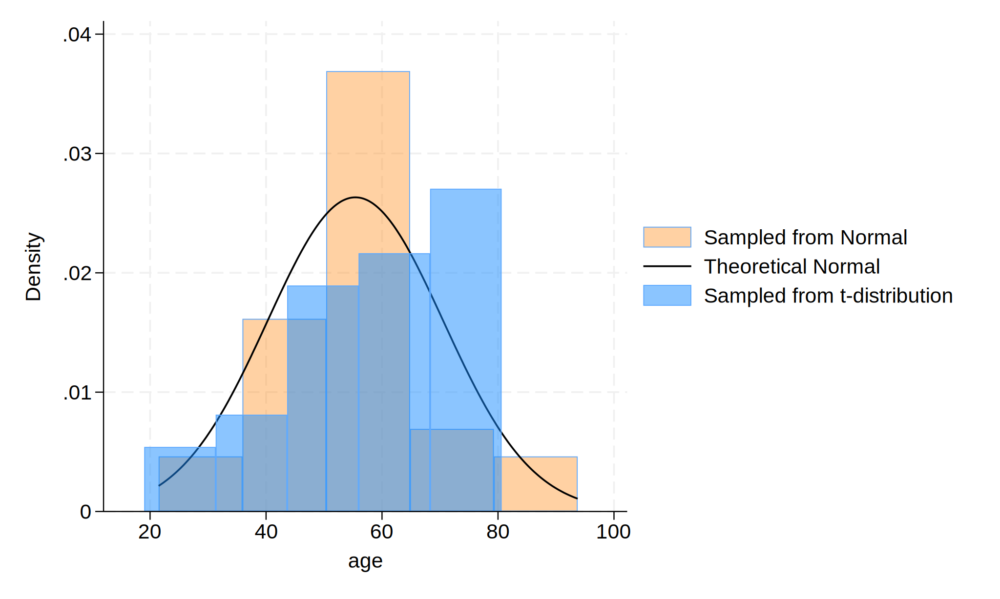

Background:
The website is developed to showcase the graph using simulated data.
Methods:
Initially, a dataset with 30 observations was created. Then we generated the age variable using a normal distribution with a mean of 57 years and a standard deviation of 15. Next we alternatively simulate the age variable using a t-distribution. For graphical representation, histograms of the age variable were plotted to visualize and compare the empirical distribution against the theoretical normal distribution curve, which aids in understanding how the age variable is distributed across the simulated observations. Finally, we created html website using command.
.
. clear
.
. // initiate dataset
. set seed 0425
. set obs 30
.
. // generate variables
. capture drop age age_t
. // normal distribution
. gen age = (rnormal() * 15) + 57
. // t distribution
. gen age_t = (rt(_N) * 15) + 57
.
. //graphical representation
. hist age, ///
> fcolor(orange%40) /// simulated normal
> addplot(hist age_t, fcolor(midblue%50)) /// simulated t-distribution
> normal /// theoretical normal
> legend(on ///
> lab(1 "Sampled from Normal") ///
> lab(2 "Theoretical Normal") ///
> lab(3 "Sampled from t-distribution") ///
> )
.
. // export plot
. graph export hw4_jiayi.png, replace
.
Distribution of Age

. display c(N)
30
. display c(k)
2
. list in 1/5
+---------------------+
| age age_t |
|---------------------|
1. | 53.67892 44.34772 |
2. | 65.75758 62.47927 |
3. | 41.89505 66.8978 |
4. | 54.30473 48.51558 |
5. | 50.82653 59.14367 |
+---------------------+
Results
The histogram plot displays the approximate distribution of simulated data derived from normal distribution $ \text{Age, years} \sim \mathcal{N}(\mu = 57, \sigma^2 = 225) $ and t-distribution, respectively.
Footnote: The results are based on simulated data.